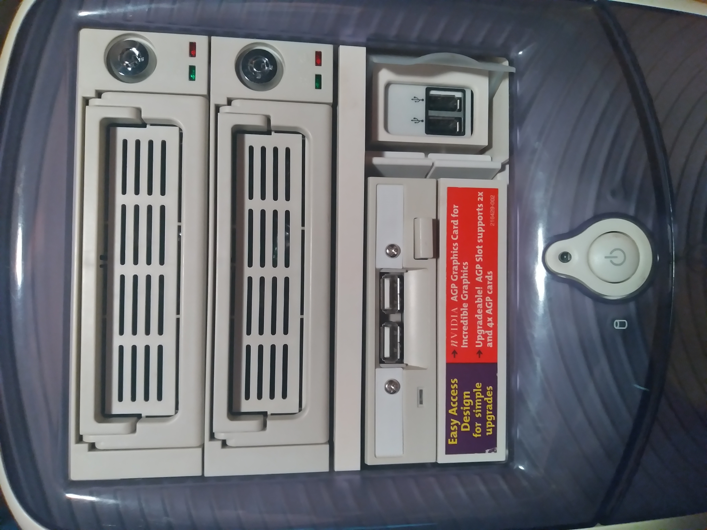
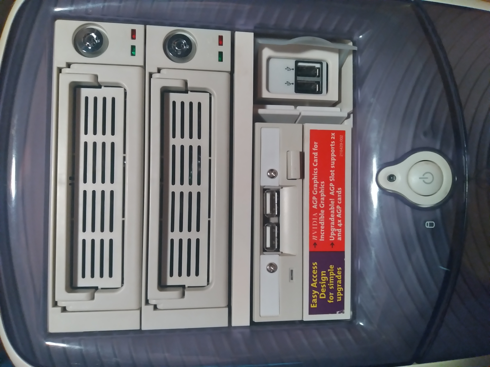

Picture Frame
This project started with a MatLab induced fire in a friend's computer which rendered its monitor inoperable. After extracing all working electronics from their melted housing, they were affixed into a particularly deep picture frame. A new power button needed to be modeled and printed along with additional parts to more effectively direct air. This project required significant skill in hardware selection, thermal design, 3D modeling, 3D printing, and fabrication.
Micro-atx Sleeper PC
 


On the outside this case may look like the Compaq home computer of yester-year, but it is capable of housing off the shelf parts of today. Additional airflow in the form of a 120mm fan and an 80mm fan were added in order to accomodate more power hunger modern components. USB 2.0 and 3.0 ports were also added along with color-appropriate hot swapable 3.5'' drive bays. All of these upgrades required significant measurement, 3D modeling, 3D printing, and fabrication.